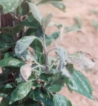

Almafa-lisztharmat
Podosphaera leucotricha
Almafajtáink közül a Jonathan a legérzékenyebb a betegségre.
Károsítására már a zöldbimbós állapottól számíthatunk. A tünetek a leveleken,
hajtásokon, vesszőkön, rügyeken, virágokon és a gyümölcsön is jelentkeznek. A
tavasszal képződött hajtások rövid ízközűek, a levelek kanalasodnak, felületüket
finom, fehér lisztszerű bevonat fedi.
A virágzat kicsi, deformálódott. A gyümölcs hálózatosan párás, erősebb
fertőzés héjrepedezettséget okoz.Védekezés:
- A tél végi metszéskor a "gyertyás" ágak, fertőzött rügyek
eltávolítása, megsemmisítése.
- Permetezés nyugalmi állapotban (Novenda, Báriumpoliszulfid 45).
- Rügyfakadástól nyár végéig rendszeres fungicide permetezés, nedvesítőszer hozzáadásával.
Felhasználható készítmények:
 Nedvesíthető
kén (Szera)
Nedvesíthető
kén (Szera)
Afugan
Chinoin-Fundazol
50 WP
Nimrod
25 EC
Rubigan
12 EC
Saprol
Topsin-M
70 WP
Karathane
LC